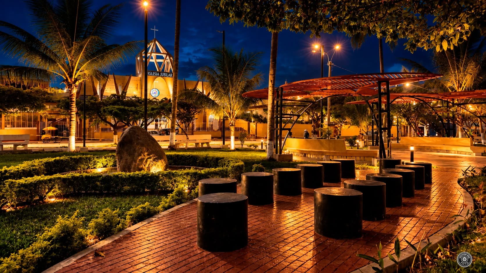

--:--
Cargando fecha...
☁ --°CSatipo · Consultando
¡La Mega sí pega...!
RADIO ONLINE · SATIPO, PERÚ
¡Disfruta la mejor música desde nuestra selva!

● EN VIVO
Escucha nuestra señal
En directo desde Satipo
Toca reproducir para escuchar la radio.
Desde Satipo, para el mundo
La fuerza de la selva
Nuestra tierra
Contáctanos y participa
¿Tienes un saludo, una noticia o un pedido musical? Escríbenos al WhatsApp 929533006.
Transmisión en directo. La programación musical depende de la emisora.